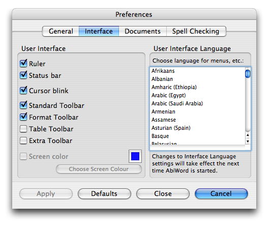
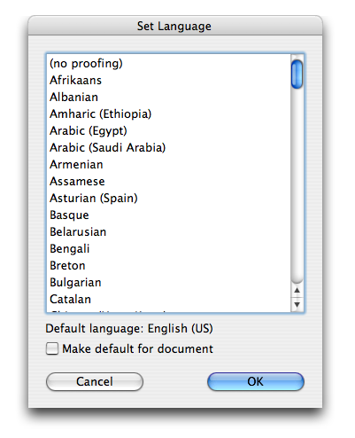

AbiWord 2.4
Cocoa version for MacOSX.
| Introduction |
| License |
| Guide |
| Templates |
| Language |
| Dictionaries |
Interface Language
The language used for the menus and tooltips and other parts of the user interface needs to be set explicitly in AbiWord's Preferences:

Choose a language, press "Apply" then "Close". You will need to restart AbiWord to see the change.

Spell Checking
The default language for spell checking is specified in the default template - see the page on templates.
You can mix languages in the document. To change the language of selected text, choose "Language..." from the "Tools" menu. This will also give you the option of changing the default language for new documents.
Note: There are a number of preferences to do with spelling, many of which are always disabled. Please ignore these.
This page is Copyright ©2004-2005 the AbiSource community. All rights reserved.
AbiSource, AbiSuite, and AbiWord are trademarks of Dom Lachowicz. All other product names, company names, or logos cited herein are property of their respective owners.
AbiWord is free software, subject to the GNU General Public License.